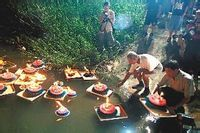

四大鬼节来历
四大鬼节：三月三、清明节、七月十四、十月初一
鬼节注意事项：避免带红绳、铃铛、风铃等招鬼物，尽量避免出门。若遇到鬼压身、鬼打墙
等灵异事件，不要慌张，集中一切注意力，睁开眼睛。
三月三
江淮、江南一带，每年农历三月三称为鬼节，传说这一天鬼魂出没，夜晚，家家户户在自家每间房屋里鸣放鞭炮，来吓走鬼、驱鬼。
清明节
我国传统节日 参见 “ 清明节 ”词条。
七月十四/十五
相传,每年从七月一日起阎王就下令大开地狱之门,让那些终年受苦受难禁锢在地狱的冤魂厉鬼走出地狱,获得短期的游荡,享受人间血食,所以人们称七月为鬼月,这个月人们认为是不吉的月份,既不嫁娶,也不搬家。
每年农历七月十四/十五日为盂兰节,又称中元节、七月半或鬼节，过去人们在这天晚上除拜祭自己的祖先外,还准备一些菜肴、酒、饭、金银衣纸之类到路口去祭祀鬼神。
七月十四/十五日包容的节俗比较复杂，既是民间的鬼节，又是道家的中元节，佛教的盂兰盆节，僧道俗三流合一。道教有所谓天官、地官、水官，合称三官，这三位是玉帝派驻人间的代表，每年都要考察人间的善恶，向上天汇报。三官分别以正月十五、七月十五、十月十五为诞辰，这三个日子也叫三元。七月十五日，叫中元，正值地官校籍赦罪之时，这一天，他要拿出厚厚的花名册，根据神仙、凡人、动物们的表现，勾勾画画，赦罪免刑。民间在中元节这一天搞一些祭祀活动，拯救那些孤魂野鬼，应当与地官的赦罪有关。七月十五又是佛教的盂兰盆节。据说释迦牟尼有个叫目连的弟子，其母虽然年轻漂亮，却无嘉言懿行，爱财小气，尤其仇视僧人，死后被打入恶鬼行列，目连按佛组指点，在七月十五日这一天，准备百味五果，各种用具，装入盆中，供养十方僧众，其母才脱离恶鬼界，升入天堂。佛祖有鉴于此，推而广之，要求佛门弟子尽心行孝，每年的七月十五，做盂兰盆，施佛及僧，报答父母恩情。佛家盂兰盆会的意义与儒家的孝道合拍，这一天则成为民间祭祀已逝父母及先人的鬼节。
农历7月14/15日是阴间最大的节日——鬼节，又称中元节或盂兰盆节，是我国三大冥界重要节日之一。民间有阳间过元宵节阴间过鬼节的传说。据说，当日阎王也会披着盛装和鬼众们共度佳节，并且让我们活着的人一起为他们祝福，祝愿另外一个世界的人们心想事成，快乐享受人间没来得及享受的幸福。因此，我国许多地方界时将举办祭祀、参佛、净墓、回顾、赏花、垂钓等活动以示庆祝。
七月十四/十五，鬼门关大开之日。不管是烧纸钱送祝福，还是捧雏菊寄哀思，或者互联网上祭先人，或者是放河灯，今天活着的人一起思念过去的人，共同送去对先人的祝福，是人灵性的自发，是感情的延伸，是最基本的信仰。而且同时“活着的人要好好珍惜活着的每一天，不要愧对社会和朋友，不要愧对了已经永远离去的亲人。因为，总有一天我们要和他们相见，到时候，你可以自豪地说，在人间是好汉，在阴间也要做鬼雄！”
道教的“中元节”
按照道教的文化逻辑，一年的时空应该分成上下阴阳两半，而且，中国道教认为养育世界万物的三个基本元素，是天、地、水。所以，道教将上半年看成是天官，下半年是地官。这里需要说明一点的是，这里说的“官”，不是指人间官员的“官”，而是指意时空流动过程中的节段，类似于中国围棋对奕中的“官子”的那个 “官”。
中国道教主要产生在中国农业文明发达地区，所以，中国道教一向认为天玄地和地玄天，地生万物，水为生物之本，且地含水。这就是说，由于中国农业文明注重地水两元素对人类万物的重要作用，所以，在中国道教文化理念中一直蕴涵着以地为中心去观察世界的“本体论”和“认识论”及其“方法论”。按照道教这种世界观，道教习惯将一年的“天官”（上半年）的正月的十五称之为“上元节”；下半年的地官节段的七月十五，则叫做“中元节”；由于地含水，水作用地，所以，地官下半年中段的十月十五则是“下元节”。这上、中、下三元，则组构出了道教对世界的三元一体系统认识。
中国道教不同于世界上的的许多宗教。世界上的许多宗教都是神人合一的，或者就像基督教那样讲究“道成肉身”的三位一体，这使得宗教传播者往往被高度神化。中国道教传教的目的很明确，道教传播者不是神而是人，所以，道教传播道德伦理是“因材施教”的。对智慧高的人，就明示《道德经》的道理，对那些智慧不够或者没有多少时间去深入反省自身道德伦理建设的人，就采取编写故事去说明道理，“寓教于游乐”，就是来源于中国道教的传教方法。
中国道教的“中元节”，其实主要是传播道德伦理的节日，也就是倡导人们在这天注重修德。中元节这天，有思想和有时间的人就要集中在一起一起共同学习老子的《道德经》，且要互相交流和沉思反省自身。而对于一般教众，道教则创造了一些故事去“寓教于游乐之中”。比如，道教杜撰出有有个叫做陈子祷的人与龙王女儿结婚，分别在正月十五、七月十五、十月十五这三天生下了“天官、地官、水官”三个孩子，这“三官”主管人间的赐福、赦罪、解厄三个任务，他们法力无边，分别要在这三天到人间巡游，检察人们的道德品质是否好还是坏，对于那些道德品质好的人，他们就给予赐福，否则，他们就要降罪。但是，中国道教又是一个很宽容和随时给予人转变更新自己的机会的宗教，所以，“中元节”并不仅仅是个奖励善良和惩罚恶劣的的节日，而主要是个“赦罪节”，所以，“中元节”又是中国节日中的“忏悔节”和“赎罪节”，一年中有罪过的人可以在中元节这天通过各种仪礼去检讨自己和请求天地人的宽恕。
十月初一
十月初一，谓之“十月朝”，又称“祭祖节”。我国自古以来就有新收时祭祀祖宗的习俗，以示孝敬、不忘本。故人们也在十月初一用黍?祭祀祖先。十月初一祭祀祖先，有家祭，也有墓祭，南北方都是如此。今天江南的许多地区，还有十月初一祭新坟的习俗。 十月初一，也是冬天的第一天，此后气候渐渐寒冷。人们怕在冥间的祖先灵魂缺衣少穿，因此，祭祀时除了食物、香烛、纸钱等一般供物外，还有一种不可缺少的供物--冥衣。在祭祀时，人们把冥衣焚化给祖先，叫做"送寒衣"。因此，十月初一，又称为"烧衣节"。
后来，有的地方，"烧寒衣"的习俗，就有了一些变迁，不再烧寒衣，而是"烧包袱"人们把许多冥纸封在一个纸袋之中，写上收者和送者的名字以及相应称呼，这就叫"包袱"。有寒衣之名，而无寒衣之实。人们认为冥间和阳间一样，有钱就可以买到许多东西。
关于祭祖节还有这样一个蔡伦造纸和蔡莫烧纸的故事。 蔡伦刚发明出纸时，买卖很好。蔡伦的嫂子慧娘就让丈夫蔡莫向蔡伦学习造纸。回来开了一家造纸厂，但蔡莫造的纸，质量不好，卖不出去，二人很着急。后来，慧娘想了一个办法，摆脱了困境。 某天的半夜，慧娘假装因急病而死。蔡莫伤心欲绝，在她的棺材前悲哀不已，他边烧纸边哭诉："我跟弟弟学造纸，不用心，造的纸质量太差了，竟把你气病了。我要把这纸烧成灰，来解心头之恨。"他烧完了又抱来纸烧，烧了一阵之后，只听见慧娘在棺材里喊："把门开开，我回来了。"这可把人们吓呆了，人们把棺材打开，慧娘装腔作势地唱道：阳间钱能行四海，阴间纸在做买卖。不是丈夫把纸烧，谁肯放我回家来？
慧娘唱了很多遍说："刚才我是鬼，现在我是人，大家不要害怕。我到了阴间，阎王就让我推磨受苦，丈夫送了钱，就有许多小鬼帮我，真是有钱能使鬼推磨。三曹官也向我要钱，我把全部的钱都送了他，他就开了地府后门，放我回来了。"蔡莫装作糊涂："我并没有送钱给你啊？"慧娘说："你烧的纸就是阴间的钱。"这样一说，蔡莫又抱了几捆纸，烧给他的父母。
在场的人们一听，便以为烧纸有很大的好处，都向蔡莫买纸。慧娘慷慨地送给乡亲，这事一传十，十传百，远近的乡亲都来买蔡家的纸，烧给自己死去的亲人。不到两天，积压的纸被抢购一空。慧娘"还阳"那一天正是农历十月初一，因此，后人都在十月初一祭祀祖先，上坟烧纸，以示对祖先的怀念。 十月初一，有的地方还有祭牛王的习俗。相传这一习俗起源于春秋秦国。某日，秦文公命人砍倒一棵梓树，梓树忽然化为一头牛。秦文公令人追杀。牛一下跳入水中，再也没有上来。人们就立"怒特祠"祭祀此牛神。怒特，是高大健壮、威风凛凛的公牛。这样的公牛，在人们的心目中，有着驱疫辟邪、保护牛类的功能。
鬼节起源
鬼节源于目连救母的故事：“有目连僧者，法力宏大。其母堕落饿鬼道中，食物入口，即化为烈焰，饥苦太甚。目连无法解救母厄，于是求教于佛，为说盂兰盆经，教于七月十五日作盂兰盆以救其母。”据说当时目连在阴间地府经历千辛万苦后，见到他死去的母亲刘氏，发现她受一群饿鬼折磨，目连想用钵盆装菜饭给她吃，菜饭却被饿鬼夺走。目连只好向佛祖求救，佛祖被目连的孝心感动，授予其盂兰盆经。按照指示，目连于农历七月十五用盂兰盆盛珍果素斋供奉母亲。挨饿的母亲终于得到了食物。为了纪念目连的孝心，佛教徒每年都有盛大的“盂兰盆会”，即我们现在所说的“鬼节”。
书上说古时候的这一天，人们会事先在街口村前搭起法师座和施孤台。法师座跟前供着超度"地狱"鬼魂的地藏王菩萨，下面供着一盘盘面制桃子、大米。施孤台上立着三块灵牌和招魂幡。过了中午, 各家各户纷纷把全猪、全羊、鸡、鸭、鹅及各式发糕、果品、瓜果等摆到施孤台上。主事者分别在每件祭品上插上一把蓝、红、绿等颜色的三角纸旗，上书"盂兰盛会"、"甘露门开"等字样。仪式是在一阵庄严肃穆的庙堂音乐中开始的。紧接着，法师敲响引钟，带领座下众僧诵念各种咒语和真言。然后施食，将一盘盘面桃子和大米撒向四方，反复三次。这种仪式叫"放焰口"。清代文人王凯泰曾有诗曰：“道场普渡妥幽魂，原有盂兰古意存。却怪红笺贴门首，肉山酒海庆中元。”描写的便是我国东南沿海一带过鬼节的习俗。
由此可见，“鬼节”是因传统美德的孝心而起的。如今我国北方的人们仍然在这一天用烧纸钱的方式祭奠早去的先人，表达对亲人的思念之情。虽然祭祀方式简单，但基本上保存了鬼节淳朴的意义。因为血脉的召唤，感情的延伸，以及对自己未来的提醒，都赋予了鬼节丰富的人文内涵。即使年代不同了，烧去的礼物也不同了，但永远捎不完活着的人对远去亲人无尽的绵绵哀思和深深的怀念。但“不同年龄段的人对这个特殊的节日有着不同的感受，因为，未来的节日正毫不留情地向自己走来，从朦胧到清晰，从思念到恐惧，从恐惧到坦然，想念过去人的时候，其实也在思考着自己今天活的经历、内容、方式和活的追求。”
汉语中用“鬼”组成的词如“鬼雄、鬼魅、鬼才”之类举不胜举，民间关于鬼的传说更无法搜集穷尽。我国的鬼文化源远流长，达到几近完美的程度。
鬼节文化在上古神话中难以见到死后世界的描绘，“鬼”字最初也并不是现在的意义。甲骨文中“鬼”本是会意字，下面是个“人”字，上面是个可怕的脑袋，意即像人的怪物。后来逐渐演化成人死之后所变之物。《礼记?祭义》已说得很明确：“众生必死，死必归士，此之谓鬼。”《礼记?祭法》则进一步指出：“庶人庶士无庙，死曰鬼。”那就是达官贵人死后有庙供奉，终年有人祭祀，则成了神，普通百姓死后无庙享祭，四处飘泊，才是鬼。我国第一部辞书《说文》中解释的“鬼，人所归为鬼”就是现在的含义。先秦典籍中涉及到“鬼”的的文字很多，孔夫子有名句“敬鬼神而远之”，可见儒家是信奉鬼神的，但只是“敬”而已。后来虽有东汉王充的无鬼论，但总还无法动摇国人对鬼神的迷信。到了清代蒲松龄笔下，虽有凶神恶煞般的厉鬼，但更多的是重情意、懂礼仪年轻漂亮的女鬼，读了《聊斋》之后，不但不觉得鬼可怕，反而觉得十分可爱。
我国鬼文化的完善和充实得益于佛道两教。道教是我们地产，佛教是汉魏时从西土传人，融入儒家文化和世俗文化，人死后的阴间世界（佛家也称冥间），也就是鬼们生活的世界逐渐构建起来。道家的主要建筑是丰都城，并在四川东部长江之滨的平都山上具体演示。风景秀美的平都山本是道家的七十二福地之一，西汉的王方平和东汉的阴长生都曾在此修炼，后得道成仙。丰都的由仙而鬼，与两位仙人的姓氏有关，王、阴倒读便是阴王，遂成了“阴间之王”，经过历代的演绎，加上《西游记》《钟馗传》等神魔小说的渲染，丰都便被营建成一座阴森可怖的鬼城，于是有了奈何桥、鬼门关、阴阳界、天子殿、无常殿、城隍庙等阴间地面和各级官府。比之于道教的阴间，佛教的冥间要完整系统得多。佛教有所谓“十界”之说，也就是世界上存在着十种境界，分别是佛、菩萨、缘觉、声闻、天、人、阿修罗、畜生、恶鬼、地狱。前四者称“四圣”，即已经超凡入圣，脱离了生死轮回之苦，后六者叫“六凡”，要在秽土中不尽地轮回，最后三者又叫“三恶道”“三恶趣”，是更为不幸的境界，而地狱则是不幸之最。说起地狱，叫人不寒而栗，且有十八层之多，越往下层，苦难越深重。地狱中不但有阎罗、判官、鬼卒等凶神恶煞，还有刀山、油锅、碾盘、锯解、石磨种种酷刑，因此人死后最怕的是进入十八层地狱。
鬼节历史 清明祭扫坟茔和丧葬礼俗有关。据载，我国古代“墓而不坟”，就是说只打墓坑，不筑坟丘，因此无从祭扫。后来墓而且坟，祭扫之俗便有了依托。秦汉时代，祭墓已经成为不可或缺的礼俗。《后汉书?明帝记》引《汉官仪》云：“古不墓祭，秦始皇起寝于墓侧，汉因而不改。诸陵寝皆以晦、望、二十四气、三伏、社、腊及四时上饭。”皇帝几乎是逢节便祭，一般官吏和普通百姓没那么多时间和金钱，便逐渐定格在二十四节气中的清明。届时，官府允许官吏请假祭扫，民间也“田野道路，士女遍满，卑吏佣丐，皆得上父母丘坟。”到了唐代，祭扫之举已将寒食、清明合二而一了，时值春暖花开，可以挑担载酒，热热闹闹去上坟，清明不但是祭祀的鬼节，也成了踏青游乐的日子。
从世俗的观点看，这两个鬼节的设置也恰到好处。清明正值北方雪化冰消之时，经过一秋一夏的雨水冲刷和一个冬天的冰雪压盖，坟茔上黄土有些被冲落，变矮变小，借清明扫一扫，添点土，让先人的房子不至于漏风淋雨；而七月十五，立秋已过，天气渐凉，到了该添衣服的时候了，也该给地下的先人送点钱去，置办点衣服，不至于到了冬天挨冷受冻。
中华民族是礼仪之帮，从来注重对祖先的祭奠追思。记得以前我家春节祭祖时上面的横批就是“木本水源”“慎宗追远”， 即不忘祖先之意。文革期间，破四旧，反迷信，谁还敢上坟烧纸？市上也没有烧纸可买，但仍有不少人家买小学生订本子用的白纸去坟上偷偷地烧给亲人。近年来，随着经济的发展，祭祀用品成了商家赚钱的一大门类，每到清明和七月十五，满街的烧纸，在店家门口，推成一座座小山，种类之繁，数量之多，不亚于端午、中秋成垛的果品盒。而且很有些现代商品意味，烧纸都成沓成捆，整齐美观，均匀地印着古钱币的印记，还有花花绿绿的美元、港币，大面值的，一张就是数亿，加上大小不一的黄灿灿的金元宝，如果真有冥国银行，也得自愧财力不足，甘心倒闭。烧掉这么多“钱”是否真能使离去的亲人在阴间过富足日子？无法得知，有句话叫 “心诚则灵”，意到心到而已。记得小时候老人说，印现成的烧纸不好使，面值再大也没用，最好使的是拿着木头刻成铜钱样的凿子，用小榔头一下一下在纸上打。打纸时有很多讲究，最好是先人的后代，一定要男孩，榔头必是木头的，打的痕迹不能叠在一起。小时候，过年或两个鬼节，我就经常做这件事。老人告诉我，打上个印就行，可自己怕不清楚，到阴间不好用，总是用力地打，还怕钱少了，先人不够用，总是打得密密麻麻的。虽然现在纸多了，样子美观了，我倒觉得小时候由后人一凿子一凿子打出的纸钱倒更能体现出对先人的真情。当然，鬼节这一天，从山野到街路，到处火光闪耀，烟气缭绕，纸灰飞扬，造成环境的污染，有时还会酿成火灾，造成不必要的损失。有什么办法呢？祖上传下来的习俗，中国人还没有学会像西方人那样用鲜花表达对逝去的亲人的哀思和怀念的习惯。鬼节祭祀，不能简单看成是迷信，西方基督教国家，现代科学已把人送上了月球，把火箭发射到了火星，但对上帝仍然笃信不移，其实就是一种精神寄托。我们给已逝亲人烧几张纸看似土俗，实际上蕴含着丰富的道德和伦理内涵。这是对离去亲人的一种感激和怀念，是同另一个世界人的一次对话，是同先人的一种沟通，是人类种族和精神的一种延续。即使亲人活着的时候，有不孝顺或照顾不周的情况，在上坟烧纸的时候，念叨几句，也能求得心理的一种平衡。也许随着时代的发展，人们文化程度的提高，我们民族会找到更好的纪念先人的办法，但对先人的纪奠和追思却是什么时代都不可缺少的。
传说中阴历7月15日是鬼门关大开的日子,在那天它们可以在阳间逗留一天.包括一些孤魂野鬼在那天都可以接受阳间人们的供奉,所以那天也称之为鬼节。